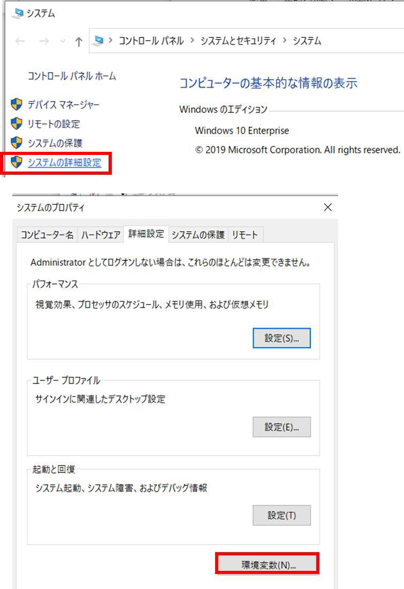
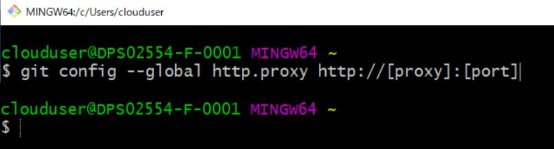
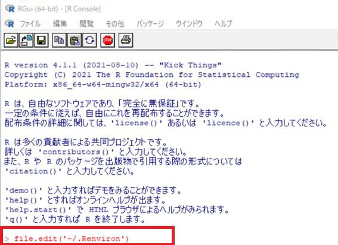
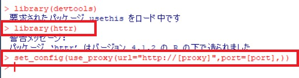

1． 本手順について
2． Windows 環境変数
3． GitBash 用プロキシ設定
4． Apache Maven 用プロキシ設定
5． R 用プロキシ設定
6． R・devtools 用プロキシ設定
プロキシ設定手順について説明します。
本セットアップ手順では、以下の環境が準備されていることを前提としています。
また本手順の設定で使用するツールのバージョンを以下に記載しています。
最新版のツールの場合、画面構成等が異なる可能性があります。
| ツール | 本手順のバージョン | 備考（バージョン指定など） |
|---|---|---|
| Git | 2.33.1 | |
| Apache Maven | 3.8.3 | |
| R | 4.1.1 | 3.6.0 以降 |
| R tools | 4 | |
| Rstudio | 2021.09.1+ 372 |
Windows 環境変数へ変数を追加します。
なお、本手順で記載する[proxy]はプロキシサーバー名（またはアドレス）、[port]はポート番号に読み替えて入力を行ってください。
「エクスプローラ」の「PC」を右クリックして、「プロパティ」を開きます。
「システムの詳細設定」内の「環境変数」をクリックします。

「システム環境変数」の「新規」をクリックして、以下の2つの変数を新たに追加します。
作成後、「OK」をクリックします。


「システム環境変数」内に新たに
http_proxy=http://[proxy]:[port]
https_proxy=http://[proxy]:[port]
が追加されていることを確認します。
Atlas セットアップ手順「3．5 WebAPI の構築」で、「OHDSI」フォルダを作成後、「git clone」などのコマンドを実行する前に実行します。
スタートメニューから Git Bash を起動し、下記コマンドを実行します。
$ git config --global http.proxy http://[proxy]:[port]

Apache Maven インストールフォルダ(本手順では「c:\maven」)にある「conf」フォルダ内の「settings.xml」ファイルを開き、下記の設定行を追加します。
＜下記の設定行を「settings.xml」に追加＞
<proxy>
<active>true</active>
<protocol>http</protocol>
<host>[proxy]</host>
<port>[port]</port>
</proxy>

＜修正前＞
<!-- proxies
| This is a list of proxies which can be used on this machine to connect to the network.
| Unless otherwise specified (by system property or command-line switch), the first proxy
| specification in this list marked as active will be used.
|-->
<proxies>
<!-- proxy
| Specification for one proxy, to be used in connecting to the network.
|
<proxy>
<id>optional</id>
<active>true</active>
<protocol>http</protocol>
<username>proxyuser</username>
<password>proxypass</password>
<host>proxy.host.net</host>
<port>80</port>
<nonProxyHosts>local.net|some.host.com</nonProxyHosts>
</proxy>
-->
</proxies>
＜修正後＞
<!-- proxies
| This is a list of proxies which can be used on this machine to connect to the network.
| Unless otherwise specified (by system property or command-line switch), the first proxy
| specification in this list marked as active will be used.
|-->
<proxies>
<proxy>
<active>true</active>
<protocol>http</protocol>
<host>[proxy]</host>
<port>[port]</port>
</proxy>
<!-- proxy
| Specification for one proxy, to be used in connecting to the network.
|
<proxy>
<id>optional</id>
<active>true</active>
<protocol>http</protocol>
<username>proxyuser</username>
<password>proxypass</password>
<host>proxy.host.net</host>
<port>80</port>
<nonProxyHosts>local.net|some.host.com</nonProxyHosts>
</proxy>
-->
</proxies>
Atlas セットアップ手順「4．3 R studio のインストール」で実施します。
R インストール後に1回のみ実施してください。
スタートメニューを開き、R コンソールを起動します。
コンソールに以下のコマンドを入力します。
> file.edit('~/.Renviron')

R エディタが起動しますので、以下2行を追加します。
http_proxy=http://[proxy]:[port]
https_proxy=http://[proxy]:[port]

入力後、×ボタンでR エディタ画面を閉じます。
変更内容の保存確認メッセージが表示されますので、「はい」をクリックします。

Atlas 手順「4．3 R studio のインストール」の手順を、続けて実行してください。
Atlas セットアップ手順「4．4 Achilles インストール」で実施します。
スタートメニューを開き、R コンソールを起動します。
以下のコマンドを入力します。
> library(devtools)

続けて以下コマンドを入力します。
> library(httr)
> set_config(use_proxy(url="http://[proxy]", port=[port],))

Atlas 手順「4．3 R studio のインストール」の Achilles インストール手順を、続けて実行してください。